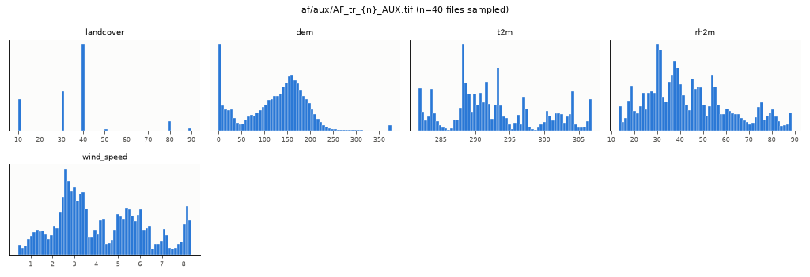
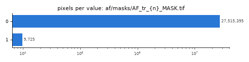
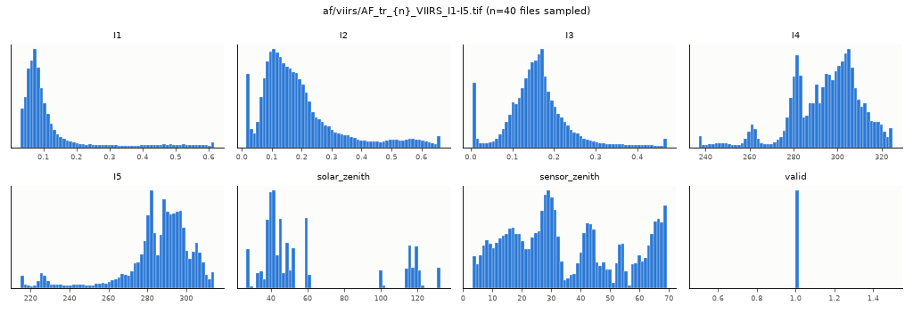
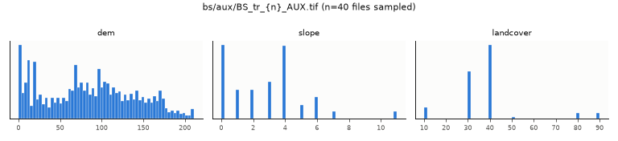
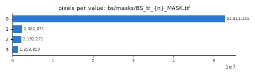
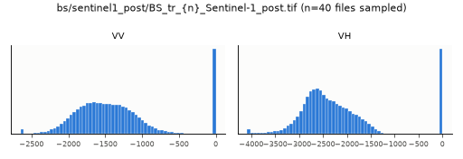
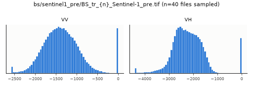
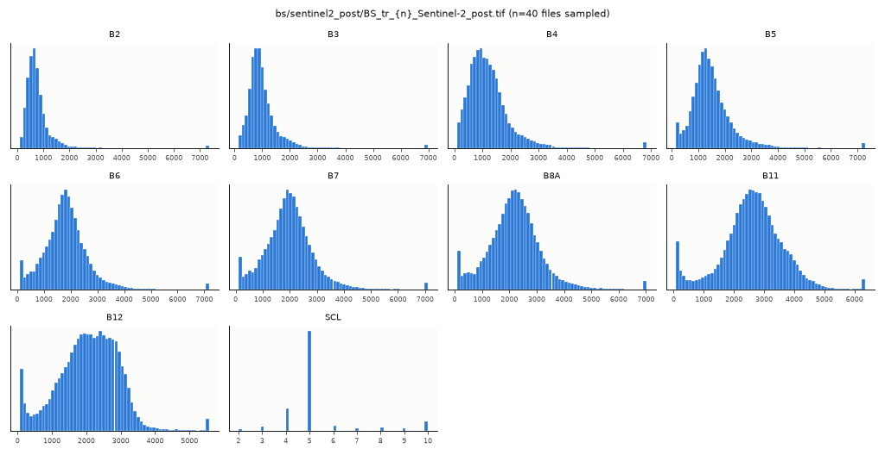
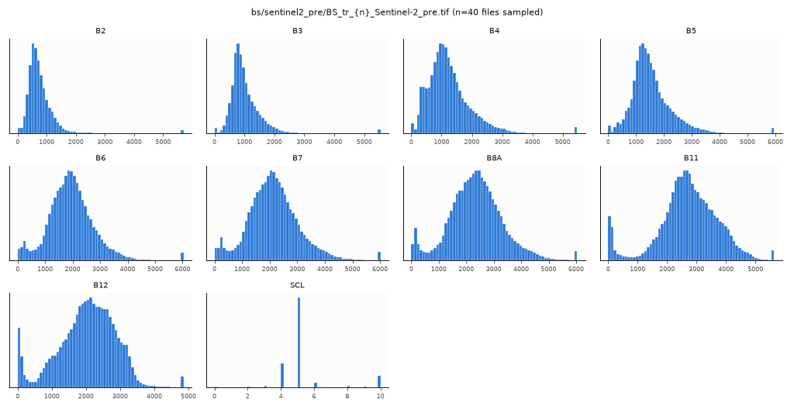

C:\Users\User\hack\fire-monitoring\data\train · 2026-09-25T02:42:22 · 2604 rasters (2604 scanned), 2 tables/lists, other: {} · 12.7 s
| group | n_files | count | dtype | nodata | crs | res | size_hw | mask_like | mask_reason | bytes_total | example |
|---|---|---|---|---|---|---|---|---|---|---|---|
| af/aux/AF_tr_{n}_AUX.tif | 420 | {"5": 420} | {"float32": 420} | {"None": 420} | {"EPSG:32637": 306, "EPSG:32638": 114} | {"[375.0, 375.0]": 420} | {"256x256": 420} | False | 5 bands | 104010788 | af/aux/AF_tr_000001_AUX.tif |
| af/masks/AF_tr_{n}_MASK.tif | 420 | {"1": 420} | {"uint8": 420} | {"255.0": 420} | {"EPSG:32637": 306, "EPSG:32638": 114} | {"[375.0, 375.0]": 420} | {"256x256": 420} | True | 1 unique integer values + name hint | 434038 | af/masks/AF_tr_000001_MASK.tif |
| af/viirs/AF_tr_{n}_VIIRS_I1-I5.tif | 420 | {"8": 420} | {"float32": 420} | {"nan": 420} | {"EPSG:32637": 306, "EPSG:32638": 114} | {"[375.0, 375.0]": 420} | {"256x256": 420} | False | 8 bands | 325701192 | af/viirs/AF_tr_000001_VIIRS_I1-I5.tif |
| bs/aux/BS_tr_{n}_AUX.tif | 224 | {"3": 224} | {"int16": 224} | {"None": 224} | {"EPSG:32638": 115, "EPSG:32637": 109} | {"[20.0, 20.0]": 224} | {"512x512": 224} | False | 3 bands | 22622096 | bs/aux/BS_tr_000001_AUX.tif |
| bs/masks/BS_tr_{n}_MASK.tif | 224 | {"1": 224} | {"uint8": 224} | {"255.0": 224} | {"EPSG:32638": 115, "EPSG:32637": 109} | {"[20.0, 20.0]": 224} | {"512x512": 224} | True | 4 unique integer values + name hint | 1372186 | bs/masks/BS_tr_000001_MASK.tif |
| bs/sentinel1_post/BS_tr_{n}_Sentinel-1_post.tif | 224 | {"2": 224} | {"int16": 224} | {"None": 224} | {"EPSG:32638": 115, "EPSG:32637": 109} | {"[20.0, 20.0]": 224} | {"512x512": 224} | False | 2 bands | 166461482 | bs/sentinel1_post/BS_tr_000001_Sentinel-1_post.tif |
| bs/sentinel1_pre/BS_tr_{n}_Sentinel-1_pre.tif | 224 | {"2": 224} | {"int16": 224} | {"None": 224} | {"EPSG:32638": 115, "EPSG:32637": 109} | {"[20.0, 20.0]": 224} | {"512x512": 224} | False | 2 bands | 168075274 | bs/sentinel1_pre/BS_tr_000001_Sentinel-1_pre.tif |
| bs/sentinel2_post/BS_tr_{n}_Sentinel-2_post.tif | 224 | {"10": 224} | {"uint16": 224} | {"None": 224} | {"EPSG:32638": 115, "EPSG:32637": 109} | {"[20.0, 20.0]": 224} | {"512x512": 224} | False | 10 bands | 755890224 | bs/sentinel2_post/BS_tr_000001_Sentinel-2_post.tif |
| bs/sentinel2_pre/BS_tr_{n}_Sentinel-2_pre.tif | 224 | {"10": 224} | {"uint16": 224} | {"None": 224} | {"EPSG:32638": 115, "EPSG:32637": 109} | {"[20.0, 20.0]": 224} | {"512x512": 224} | False | 10 bands | 759304392 | bs/sentinel2_pre/BS_tr_000001_Sentinel-2_pre.tif |
| members | images | masks |
|---|---|---|
| ["af/aux/AF_tr_{n}_AUX.tif", "af/masks/AF_tr_{n}_MASK.tif", "af/viirs/AF_tr_{n}_VIIRS_I1-I5.tif"] | ["af/viirs/AF_tr_{n}_VIIRS_I1-I5.tif", "af/aux/AF_tr_{n}_AUX.tif"] | ["af/masks/AF_tr_{n}_MASK.tif"] |
| ["bs/aux/BS_tr_{n}_AUX.tif", "bs/masks/BS_tr_{n}_MASK.tif", "bs/sentinel1_post/BS_tr_{n}_Sentinel-1_post.tif", "bs/sentinel1_pre/BS_tr_{n}_Sentinel-1_pre.tif", "bs/sentinel2_post/BS_tr_{n}_Sentinel-2_post.tif", "bs/sentinel2_pre/BS_tr_{n}_Sentinel-2_pre.tif"] | ["bs/sentinel2_post/BS_tr_{n}_Sentinel-2_post.tif", "bs/sentinel2_pre/BS_tr_{n}_Sentinel-2_pre.tif", "bs/aux/BS_tr_{n}_AUX.tif", "bs/sentinel1_post/BS_tr_{n}_Sentinel-1_post.tif", "bs/sentinel1_pre/BS_tr_{n}_Sentinel-1_pre.tif"] | ["bs/masks/BS_tr_{n}_MASK.tif"] |
pairs_guess.csv: 644 image-mask pairs.
| group_a | group_b | shared_ids | frac_a | frac_b |
|---|---|---|---|---|
| af/aux/AF_tr_{n}_AUX.tif | af/masks/AF_tr_{n}_MASK.tif | 420 | 1 | 1 |
| af/aux/AF_tr_{n}_AUX.tif | af/viirs/AF_tr_{n}_VIIRS_I1-I5.tif | 420 | 1 | 1 |
| af/masks/AF_tr_{n}_MASK.tif | af/viirs/AF_tr_{n}_VIIRS_I1-I5.tif | 420 | 1 | 1 |
| af/aux/AF_tr_{n}_AUX.tif | bs/aux/BS_tr_{n}_AUX.tif | 224 | 0.5333 | 1 |
| af/aux/AF_tr_{n}_AUX.tif | bs/masks/BS_tr_{n}_MASK.tif | 224 | 0.5333 | 1 |
| af/aux/AF_tr_{n}_AUX.tif | bs/sentinel1_post/BS_tr_{n}_Sentinel-1_post.tif | 224 | 0.5333 | 1 |
| af/aux/AF_tr_{n}_AUX.tif | bs/sentinel1_pre/BS_tr_{n}_Sentinel-1_pre.tif | 224 | 0.5333 | 1 |
| af/aux/AF_tr_{n}_AUX.tif | bs/sentinel2_post/BS_tr_{n}_Sentinel-2_post.tif | 224 | 0.5333 | 1 |
| af/aux/AF_tr_{n}_AUX.tif | bs/sentinel2_pre/BS_tr_{n}_Sentinel-2_pre.tif | 224 | 0.5333 | 1 |
| af/masks/AF_tr_{n}_MASK.tif | bs/aux/BS_tr_{n}_AUX.tif | 224 | 0.5333 | 1 |
| af/masks/AF_tr_{n}_MASK.tif | bs/masks/BS_tr_{n}_MASK.tif | 224 | 0.5333 | 1 |
| af/masks/AF_tr_{n}_MASK.tif | bs/sentinel1_post/BS_tr_{n}_Sentinel-1_post.tif | 224 | 0.5333 | 1 |
| af/masks/AF_tr_{n}_MASK.tif | bs/sentinel1_pre/BS_tr_{n}_Sentinel-1_pre.tif | 224 | 0.5333 | 1 |
| af/masks/AF_tr_{n}_MASK.tif | bs/sentinel2_post/BS_tr_{n}_Sentinel-2_post.tif | 224 | 0.5333 | 1 |
| af/masks/AF_tr_{n}_MASK.tif | bs/sentinel2_pre/BS_tr_{n}_Sentinel-2_pre.tif | 224 | 0.5333 | 1 |
| af/viirs/AF_tr_{n}_VIIRS_I1-I5.tif | bs/aux/BS_tr_{n}_AUX.tif | 224 | 0.5333 | 1 |
| af/viirs/AF_tr_{n}_VIIRS_I1-I5.tif | bs/masks/BS_tr_{n}_MASK.tif | 224 | 0.5333 | 1 |
| af/viirs/AF_tr_{n}_VIIRS_I1-I5.tif | bs/sentinel1_post/BS_tr_{n}_Sentinel-1_post.tif | 224 | 0.5333 | 1 |
| af/viirs/AF_tr_{n}_VIIRS_I1-I5.tif | bs/sentinel1_pre/BS_tr_{n}_Sentinel-1_pre.tif | 224 | 0.5333 | 1 |
| af/viirs/AF_tr_{n}_VIIRS_I1-I5.tif | bs/sentinel2_post/BS_tr_{n}_Sentinel-2_post.tif | 224 | 0.5333 | 1 |
| af/viirs/AF_tr_{n}_VIIRS_I1-I5.tif | bs/sentinel2_pre/BS_tr_{n}_Sentinel-2_pre.tif | 224 | 0.5333 | 1 |
| bs/aux/BS_tr_{n}_AUX.tif | bs/masks/BS_tr_{n}_MASK.tif | 224 | 1 | 1 |
| bs/aux/BS_tr_{n}_AUX.tif | bs/sentinel1_post/BS_tr_{n}_Sentinel-1_post.tif | 224 | 1 | 1 |
| bs/aux/BS_tr_{n}_AUX.tif | bs/sentinel1_pre/BS_tr_{n}_Sentinel-1_pre.tif | 224 | 1 | 1 |
| bs/aux/BS_tr_{n}_AUX.tif | bs/sentinel2_post/BS_tr_{n}_Sentinel-2_post.tif | 224 | 1 | 1 |
| bs/aux/BS_tr_{n}_AUX.tif | bs/sentinel2_pre/BS_tr_{n}_Sentinel-2_pre.tif | 224 | 1 | 1 |
| bs/masks/BS_tr_{n}_MASK.tif | bs/sentinel1_post/BS_tr_{n}_Sentinel-1_post.tif | 224 | 1 | 1 |
| bs/masks/BS_tr_{n}_MASK.tif | bs/sentinel1_pre/BS_tr_{n}_Sentinel-1_pre.tif | 224 | 1 | 1 |
| bs/masks/BS_tr_{n}_MASK.tif | bs/sentinel2_post/BS_tr_{n}_Sentinel-2_post.tif | 224 | 1 | 1 |
| bs/masks/BS_tr_{n}_MASK.tif | bs/sentinel2_pre/BS_tr_{n}_Sentinel-2_pre.tif | 224 | 1 | 1 |
| bs/sentinel1_post/BS_tr_{n}_Sentinel-1_post.tif | bs/sentinel1_pre/BS_tr_{n}_Sentinel-1_pre.tif | 224 | 1 | 1 |
| bs/sentinel1_post/BS_tr_{n}_Sentinel-1_post.tif | bs/sentinel2_post/BS_tr_{n}_Sentinel-2_post.tif | 224 | 1 | 1 |
| bs/sentinel1_post/BS_tr_{n}_Sentinel-1_post.tif | bs/sentinel2_pre/BS_tr_{n}_Sentinel-2_pre.tif | 224 | 1 | 1 |
| bs/sentinel1_pre/BS_tr_{n}_Sentinel-1_pre.tif | bs/sentinel2_post/BS_tr_{n}_Sentinel-2_post.tif | 224 | 1 | 1 |
| bs/sentinel1_pre/BS_tr_{n}_Sentinel-1_pre.tif | bs/sentinel2_pre/BS_tr_{n}_Sentinel-2_pre.tif | 224 | 1 | 1 |
| bs/sentinel2_post/BS_tr_{n}_Sentinel-2_post.tif | bs/sentinel2_pre/BS_tr_{n}_Sentinel-2_pre.tif | 224 | 1 | 1 |
420 files, sampled 40; descriptions: ['landcover', 'dem', 't2m', 'rh2m', 'wind_speed']; extent WGS84: [37.242715, 44.152255, 49.055388, 53.716676]
| band | name | min | p1 | p5 | p50 | p95 | p99 | max | mean | std | nan_frac | zero_frac | nodata_frac |
|---|---|---|---|---|---|---|---|---|---|---|---|---|---|
| 1 | landcover | 10 | 10 | 10 | 40 | 80 | 90 | 90 | 35.37 | 17.34 | 0.00445 | 0 | 0 |
| 2 | dem | -178.8 | 0 | 0 | 137.8 | 213.1 | 292.2 | 850.6 | 124.2 | 71.79 | 0 | 0.04318 | 0 |
| 3 | t2m | 277.8 | 281.8 | 282.5 | 291.7 | 304.5 | 306.8 | 307 | 292.8 | 6.766 | 0.02796 | 0 | 0 |
| 4 | rh2m | 12.68 | 13.6 | 18.63 | 40.05 | 79.58 | 87.75 | 90.6 | 44.05 | 18.14 | 0.02796 | 0 | 0 |
| 5 | wind_speed | 0.1784 | 0.6916 | 1.239 | 3.716 | 8.067 | 8.287 | 8.468 | 4.206 | 2.01 | 0.02796 | 0 | 0 |

420 files, sampled 40; descriptions: ['active_fire']; extent WGS84: [37.242715, 44.152255, 49.055388, 53.716676]
| band | name | min | p1 | p5 | p50 | p95 | p99 | max | mean | std | nan_frac | zero_frac | nodata_frac |
|---|---|---|---|---|---|---|---|---|---|---|---|---|---|
| 1 | active_fire | 0 | 0 | 0 | 0 | 0 | 0 | 1 | 0.0003188 | 0.01785 | 0 | 0.9997 | 0 |
| value | pixels | pixel_frac | files_with | files_frac |
|---|---|---|---|---|
| 0 | 27515395 | 0.9996 | 420 | 1 |
| 1 | 9725 | 0.000353 | 296 | 0.7048 |

420 files, sampled 40; descriptions: ['I1', 'I2', 'I3', 'I4', 'I5', 'solar_zenith', 'sensor_zenith', 'valid']; extent WGS84: [37.242715, 44.152255, 49.055388, 53.716676]
| band | name | min | p1 | p5 | p50 | p95 | p99 | max | mean | std | nan_frac | zero_frac | nodata_frac |
|---|---|---|---|---|---|---|---|---|---|---|---|---|---|
| 1 | I1 | 0.02077 | 0.03279 | 0.0403 | 0.08261 | 0.468 | 0.5916 | 0.8646 | 0.1264 | 0.124 | 0.2786 | 0 | 0 |
| 2 | I2 | 0.008776 | 0.01715 | 0.03543 | 0.1576 | 0.5263 | 0.6347 | 0.9464 | 0.193 | 0.137 | 0.2786 | 0 | 0 |
| 3 | I3 | 0 | 0.005378 | 0.01467 | 0.1578 | 0.2941 | 0.4361 | 0.6623 | 0.1616 | 0.0767 | 0.2786 | 0.00033 | 0 |
| 4 | I4 | 212.2 | 242.9 | 261.6 | 297.1 | 317.5 | 323.6 | 354.1 | 294.5 | 16.33 | 0.06867 | 0 | 0 |
| 5 | I5 | 206.6 | 217.1 | 231.7 | 288.9 | 307.4 | 313.1 | 318.1 | 284.5 | 19.88 | 0.06867 | 0 | 0 |
| 6 | solar_zenith | 26.35 | 26.8 | 32.7 | 45.04 | 120.1 | 132.4 | 132.9 | 60.48 | 31.78 | 0 | 0 | 0 |
| 7 | sensor_zenith | 1.05 | 3.99 | 7.58 | 30.34 | 67.23 | 68.92 | 69.95 | 34.92 | 19.28 | 0 | 0 | 0 |
| 8 | valid | 1 | 1 | 1 | 1 | 1 | 1 | 1 | 1 | 0 | 0 | 0 | 0 |

224 files, sampled 40; descriptions: ['dem', 'slope', 'landcover']; extent WGS84: [38.615977, 45.663961, 48.035146, 51.845242]
| band | name | min | p1 | p5 | p50 | p95 | p99 | max | mean | std | nan_frac | zero_frac | nodata_frac |
|---|---|---|---|---|---|---|---|---|---|---|---|---|---|
| 1 | dem | -2 | 0 | 3 | 85 | 175 | 203 | 229 | 86.1 | 54.98 | 0 | 0.03418 | 0 |
| 2 | slope | 0 | 0 | 0 | 3 | 6.05 | 11 | 11 | 2.812 | 2.422 | 0 | 0.2536 | 0 |
| 3 | landcover | 10 | 10 | 10 | 40 | 80 | 90 | 90 | 38.22 | 16.3 | 0 | 0 | 0 |

224 files, sampled 40; descriptions: ['severity']; extent WGS84: [38.615977, 45.663961, 48.035146, 51.845242]
| band | name | min | p1 | p5 | p50 | p95 | p99 | max | mean | std | nan_frac | zero_frac | nodata_frac |
|---|---|---|---|---|---|---|---|---|---|---|---|---|---|
| 1 | severity | 0 | 0 | 0 | 0 | 2 | 3 | 3 | 0.2328 | 0.6751 | 0 | 0.8736 | 0 |
| value | pixels | pixel_frac | files_with | files_frac |
|---|---|---|---|---|
| 0 | 52811255 | 0.8994 | 224 | 1 |
| 1 | 2362871 | 0.04024 | 224 | 1 |
| 2 | 2192271 | 0.03733 | 222 | 0.9911 |
| 3 | 1353859 | 0.02306 | 202 | 0.9018 |

224 files, sampled 40; descriptions: ['VV', 'VH']; extent WGS84: [38.615977, 45.663961, 48.035146, 51.845242]
| band | name | min | p1 | p5 | p50 | p95 | p99 | max | mean | std | nan_frac | zero_frac | nodata_frac |
|---|---|---|---|---|---|---|---|---|---|---|---|---|---|
| 1 | VV | -4327 | -2391 | -2090 | -1460 | 0 | 0 | 1104 | -1359 | 592.1 | 0 | 0.1031 | 0 |
| 2 | VH | -4952 | -3784 | -3183 | -2405 | 0 | 0 | 0 | -2196 | 885.8 | 0 | 0.1031 | 0 |

224 files, sampled 40; descriptions: ['VV', 'VH']; extent WGS84: [38.615977, 45.663961, 48.035146, 51.845242]
| band | name | min | p1 | p5 | p50 | p95 | p99 | max | mean | std | nan_frac | zero_frac | nodata_frac |
|---|---|---|---|---|---|---|---|---|---|---|---|---|---|
| 1 | VV | -4239 | -2385 | -2021 | -1385 | -486 | 0 | 1765 | -1348 | 477.4 | 0 | 0.03911 | 0 |
| 2 | VH | -4939 | -3933 | -3110 | -2246 | -1264 | 0 | 125 | -2195 | 696.9 | 0 | 0.03911 | 0 |

224 files, sampled 40; descriptions: ['B2', 'B3', 'B4', 'B5', 'B6', 'B7', 'B8A', 'B11', 'B12', 'SCL']; extent WGS84: [38.615977, 45.663961, 48.035146, 51.845242]
| band | name | min | p1 | p5 | p50 | p95 | p99 | max | mean | std | nan_frac | zero_frac | nodata_frac |
|---|---|---|---|---|---|---|---|---|---|---|---|---|---|
| 1 | B2 | 0 | 160 | 278 | 667 | 1706 | 5165 | 1.834e+04 | 842.7 | 906.1 | 0 | 0.0033 | 0 |
| 2 | B3 | 0 | 213 | 377 | 892 | 2070 | 4979 | 1.816e+04 | 1058 | 870.6 | 0 | 0.00315 | 0 |
| 3 | B4 | 0 | 173 | 325 | 1104 | 2642 | 4901 | 1.746e+04 | 1263 | 938.6 | 0 | 0.00318 | 0 |
| 4 | B5 | 0 | 189 | 480 | 1378 | 2961 | 5272 | 1.706e+04 | 1540 | 972.8 | 0 | 0.00315 | 0 |
| 5 | B6 | 0 | 127 | 492 | 1801 | 3265 | 5388 | 1.679e+04 | 1866 | 996.3 | 0 | 0.00317 | 0 |
| 6 | B7 | 0 | 134 | 521 | 1974 | 3558 | 5556 | 1.659e+04 | 2032 | 1035 | 0 | 0.00317 | 0 |
| 7 | B8A | 0 | 117 | 524 | 2191 | 3815 | 5614 | 1.63e+04 | 2221 | 1072 | 0 | 0.00319 | 0 |
| 8 | B11 | 0 | 88 | 558 | 2640 | 4182 | 5231 | 1.299e+04 | 2624 | 1059 | 0 | 0.00315 | 0 |
| 9 | B12 | 0 | 82 | 400 | 2120 | 3300 | 4569 | 1.155e+04 | 2084 | 923.4 | 0 | 0.00315 | 0 |
| 10 | SCL | 0 | 2 | 4 | 5 | 10 | 10 | 11 | 5.265 | 1.604 | 0 | 0.00315 | 0 |

224 files, sampled 40; descriptions: ['B2', 'B3', 'B4', 'B5', 'B6', 'B7', 'B8A', 'B11', 'B12', 'SCL']; extent WGS84: [38.615977, 45.663961, 48.035146, 51.845242]
| band | name | min | p1 | p5 | p50 | p95 | p99 | max | mean | std | nan_frac | zero_frac | nodata_frac |
|---|---|---|---|---|---|---|---|---|---|---|---|---|---|
| 1 | B2 | 0 | 131 | 295 | 669 | 1447 | 3069 | 1.592e+04 | 790.2 | 706.3 | 0 | 0.0072 | 0 |
| 2 | B3 | 0 | 212 | 460 | 903 | 1880 | 3125 | 1.476e+04 | 1039 | 698.1 | 0 | 0.00714 | 0 |
| 3 | B4 | 0 | 159 | 341 | 1124 | 2525 | 3514 | 1.457e+04 | 1259 | 817.6 | 0 | 0.00716 | 0 |
| 4 | B5 | 0 | 237 | 620 | 1421 | 2889 | 3960 | 1.537e+04 | 1574 | 850.6 | 0 | 0.00714 | 0 |
| 5 | B6 | 0 | 152 | 588 | 1914 | 3343 | 4339 | 1.467e+04 | 1966 | 913.3 | 0 | 0.00715 | 0 |
| 6 | B7 | 0 | 159 | 623 | 2101 | 3727 | 4823 | 1.433e+04 | 2158 | 982.8 | 0 | 0.00715 | 0 |
| 7 | B8A | 0 | 111 | 607 | 2342 | 4009 | 5019 | 1.412e+04 | 2366 | 1035 | 0 | 0.00716 | 0 |
| 8 | B11 | 0 | 51 | 360 | 2730 | 4267 | 4973 | 1.106e+04 | 2725 | 1047 | 0 | 0.00714 | 0 |
| 9 | B12 | 0 | 33 | 252 | 2104 | 3240 | 3876 | 9012 | 2047 | 867.3 | 0 | 0.00714 | 0 |
| 10 | SCL | 0 | 2 | 4 | 5 | 10 | 10 | 11 | 5.318 | 1.702 | 0 | 0.00714 | 0 |

420 rows
| col | dtype | missing_frac | nunique | top |
|---|---|---|---|---|
| chip_id | str | 0 | 420 | ["AF_tr_000001", "AF_tr_000002", "AF_tr_000003", "AF_tr_000004", "AF_tr_000005"] |
| kind | str | 0 | 1 | ["af"] |
| fire_event_id | float64 | 1 | 0 | [] |
| region | float64 | 1 | 0 | [] |
| epsg | float64 | 0 | 2 | |
| x_min | float64 | 0 | 6 | |
| y_min | float64 | 0 | 11 | |
| x_max | float64 | 0 | 6 | |
| y_max | float64 | 0 | 11 | |
| width | int64 | 0 | 1 | |
| height | int64 | 0 | 1 | |
| gsd | int64 | 0 | 1 | |
| acq_datetime | str | 0 | 78 | ["2019-08-29T11:06:00+00:00", "2020-08-17T09:42:00+00:00", "2021-10-09T09:54:00+00:00", "2020-04-08T09:48:00+00:00", "2020-09-25T00:12:00+00:00"] |
| satellite | str | 0 | 3 | ["SNPP", "NOAA20", "NOAA21"] |
| date_pre | float64 | 1 | 0 | [] |
| date_post | float64 | 1 | 0 | [] |
| s1_date_pre | float64 | 1 | 0 | [] |
| s1_date_post | float64 | 1 | 0 | [] |
| valid_frac | float64 | 0 | 15 | |
| cloud_frac | float64 | 1 | 0 | [] |
| landcover_top | float64 | 1 | 0 | [] |
| n_fire_px | float64 | 0 | 91 | |
| burn_area_ha | float64 | 1 | 0 | [] |
| sev1_px | float64 | 1 | 0 | [] |
| sev2_px | float64 | 1 | 0 | [] |
| sev3_px | float64 | 1 | 0 | [] |
224 rows
| col | dtype | missing_frac | nunique | top |
|---|---|---|---|---|
| chip_id | str | 0 | 224 | ["BS_tr_000001", "BS_tr_000002", "BS_tr_000003", "BS_tr_000004", "BS_tr_000005"] |
| kind | str | 0 | 1 | ["bs"] |
| fire_event_id | str | 0 | 224 | ["FE00657", "FE01044", "FE01122", "FE01130", "FE01642"] |
| region | float64 | 1 | 0 | [] |
| epsg | float64 | 0 | 2 | |
| x_min | float64 | 0 | 46 | |
| y_min | float64 | 0 | 57 | |
| x_max | float64 | 0 | 46 | |
| y_max | float64 | 0 | 57 | |
| width | int64 | 0 | 1 | |
| height | int64 | 0 | 1 | |
| gsd | int64 | 0 | 1 | |
| acq_datetime | float64 | 1 | 0 | [] |
| satellite | float64 | 1 | 0 | [] |
| date_pre | str | 0 | 140 | ["2024-09-21", "2024-09-23", "2022-08-15", "2023-09-19", "2024-09-06"] |
| date_post | str | 0 | 141 | ["2020-10-07", "2024-10-06", "2020-07-11", "2020-09-07", "2020-10-09"] |
| s1_date_pre | str | 0 | 134 | ["2020-08-26", "2024-09-22", "2024-09-20", "2020-06-27", "2020-09-19"] |
| s1_date_post | str | 0 | 123 | ["2020-09-07", "2020-10-13", "2020-10-07", "2023-10-03", "2024-09-04"] |
| valid_frac | float64 | 0 | 138 | |
| cloud_frac | float64 | 0 | 138 | |
| landcover_top | float64 | 1 | 0 | [] |
| n_fire_px | float64 | 1 | 0 | [] |
| burn_area_ha | float64 | 0 | 224 | |
| sev1_px | float64 | 0 | 224 | |
| sev2_px | float64 | 0 | 222 | |
| sev3_px | float64 | 0 | 202 |